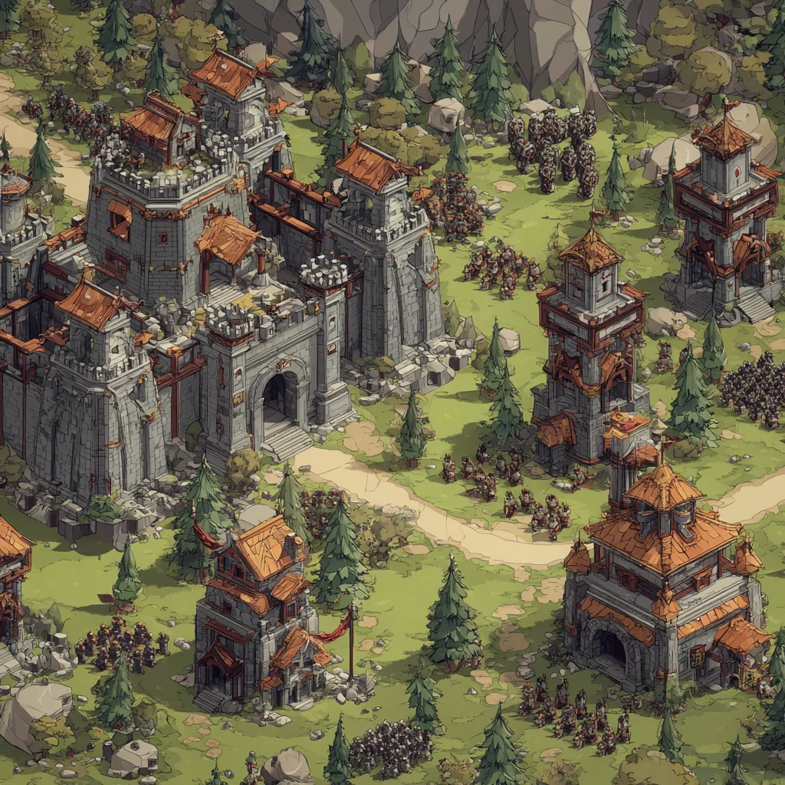
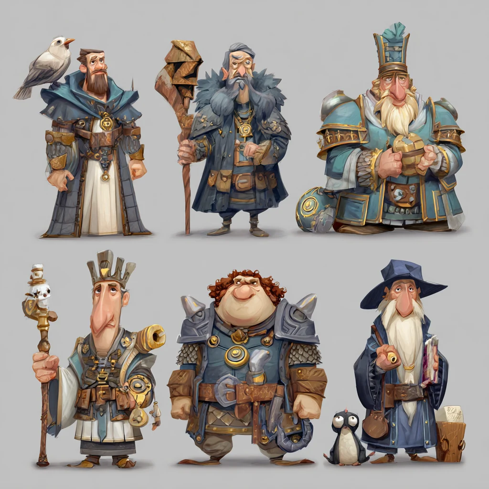

📜
Role 1 · World director
The Chronicler
The world-building GM. Seeds the map, then keeps rewriting it — ages, prophecies, disasters, migrations, "the year the sea caught fire." No two histories run the same.

A toony turn-based sandbox where history's myths are simply true: the Egyptians are mummies, the Norse are dwarves and elves, the Transylvanians are vampires. An LLM keeps rewriting the world, gods run on the mana of their followers, and lords squabble for divine favour. Are you a god or a lord? We're going to let a playtest decide.
The one-line hook
The brief was "combine fantasy and history." Our answer: don't blend them — believe them. Take every culture's tallest tale at face value and crank it to eleven. The result is a grand-strategy sandbox that's secretly a comedy about what nations think they are.
The core joke, made into a faction roster
Every "empire" is a real culture's fantasy stereotype taken 100% literally and played for laughs — proud, petty, and gloriously on-brand.
It's a satire engine: the humour writes itself from the clash of stereotypes, and each faction plays differently because its myth is its mechanics. Mummies never truly die (they just file more paperwork); vampires are unstoppable at night and useless at brunch.

Deathless undead bureaucracy; the afterlife runs on forms.
Nocturnal aristocrats; terrifying by night, hopeless by day.
Two feuding cousins who each insist they're the real Norse.
Legions literally carved from stone. Very orderly. Very heavy. (my addition)
Everyone's the child of a god and won't stop mentioning it. (my addition)
Faster than you, hairier than you, already behind you. (my addition)
The question two students disagreed on — kept on purpose
One student wanted to be a god. One wanted to rule an empire. Here's the good news: those are the same simulation seen from two heights — so we can build both and find out which is more fun.
Bottom-up. You run one empire and court the heavens.
Top-down. You are a deity, and your power is belief.
Same map, same turns, same worship economy — only the camera and the verbs change. That's exactly why it's cheap to prototype both (more on that below).
The engine under both modes
Every god has a mana pool that swells with worshippers and drains with miracles. Every lord needs those miracles to win. That single loop makes gods and lords need — and resent — each other.
Where the AI actually lives
This is a world that has to feel alive and improvised — which is exactly what language models are for. Four distinct jobs:
The world-building GM. Seeds the map, then keeps rewriting it — ages, prophecies, disasters, migrations, "the year the sea caught fire." No two histories run the same.
Each a distinct personality with an agenda and a grudge. They weigh prayers, grant twisted boons, and feud with each other. Your rivals (or your role) if you play a god.
LLM-driven opponent empires with ambitions, alliances, and long memories. They negotiate, betray, and monologue in perfectly in-character, gloriously petty ways.
Named viziers, celebrity heroes, doomsayer prophets. They spawn quests, spread gossip, foment rebellions, and give each empire a cast rather than a spreadsheet.
The signature loop, live
Gods, lords, mana, and satire in one exchange — every line generated in character, every consequence a real number on the board.
O Nocturne — hold back the dawn one hour, that my legions may take the Mummies' capital before sunrise.
Darkness is expensive, child. I'll stay the sun… if every soldier who survives raises Me a shrine, and your general converts on the steps of the temple he's about to loot.
(through gritted fangs) …Done.
Delightful. Dawn is postponed. Do try to look grateful — the Sun-god is watching, and He gossips.
Your best idea — turned into a lesson
Instead of arguing which mode is better in the classroom, we build cheap versions of both and let a playtest decide with evidence. The build path is the curriculum.
Map, turns, empires, and the worship economy — the substrate both modes stand on. Built once.
Fork a rough "Lord" slice and a rough "God" slice on top. Debug buttons, placeholder art, zero polish — we're testing feel, not shipping UI. (Lesson: throwaway/temporary controls, and why you build them.)
Same scenario, fixed length, a small group of testers, half starting in each mode. Instrument it: log where people lean in and where they check out. (Lesson: how to set up a beta test and what to measure.)
Short exit survey: what did you like? when were you bored? what did you want to do but couldn't? Would you play again — which mode? (Lesson: writing survey questions that aren't just "was it fun?")
Agree the bar before testing, then let the numbers rule. (Lesson: turning opinions into a decision rule.)
The god-vs-lord verdict falls out of the same rubric: both clear the bar → ship both (they're two lenses on one sim); only one → focus there; neither → the fun's in the world itself, so rework the agency layer. Nobody has to "win" the argument.
Still on the table
For the staff room